Risk graphs — Thursday, November 12, 2026
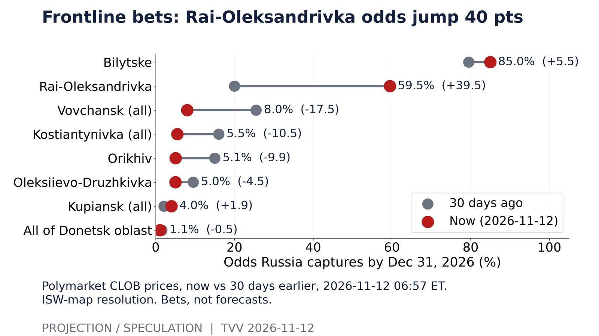
Frontline bets: Rai-Oleksandrivka odds jump 40 pts. Polymarket CLOB prices, now vs 30 days earlier, 2026-11-12 06:57 ET. ISW-map resolution. Bets, not forecasts.Source: https://polymarket.com/event/will-russia-capture-all-of-kostyantynivka-by 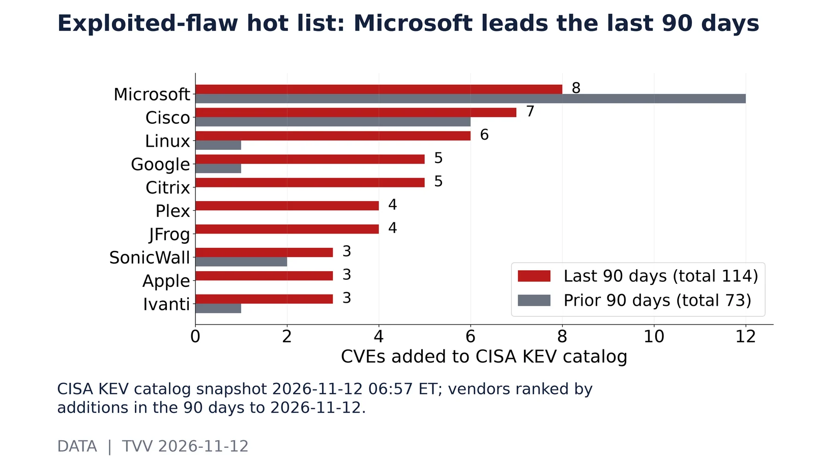
Exploited-flaw hot list: Microsoft leads the last 90 days. CISA KEV catalog snapshot 2026-11-12 06:57 ET; vendors ranked by additions in the 90 days to 2026-11-12.Source: https://www.cisa.gov/known-exploited-vulnerabilities-catalog 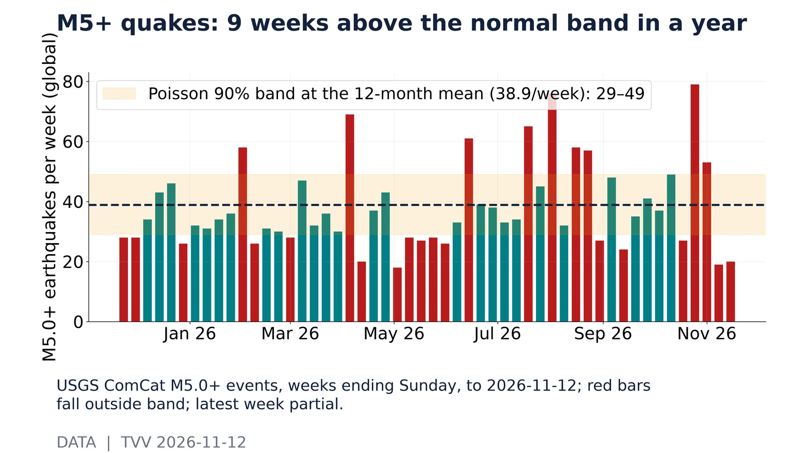
M5+ quakes: 9 weeks above the normal band in a year. USGS ComCat M5.0+ events, weeks ending Sunday, to 2026-11-12; red bars fall outside band; latest week partial.Source: https://earthquake.usgs.gov/fdsnws/event/1/query?format=csv&starttime=2025-11-12&endtime=2026-11-12T12:00:00&minmagnitude=5 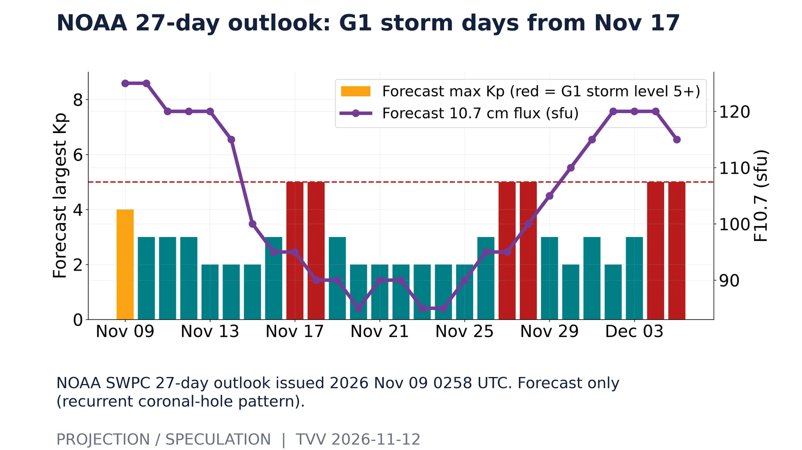
NOAA 27-day outlook: G1 storm days from Nov 17. NOAA SWPC 27-day outlook issued 2026 Nov 09 0258 UTC. Forecast only (recurrent coronal-hole pattern).Source: https://services.swpc.noaa.gov/text/27-day-outlook.txt 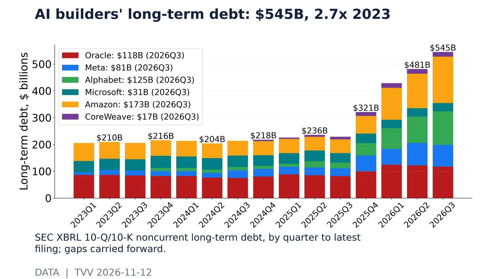
AI builders' long-term debt: $545B, 2.7x 2023. SEC XBRL 10-Q/10-K noncurrent long-term debt, by quarter to latest filing; gaps carried forward.Source: https://data.sec.gov/api/xbrl/companyfacts/CIK0001341439.json 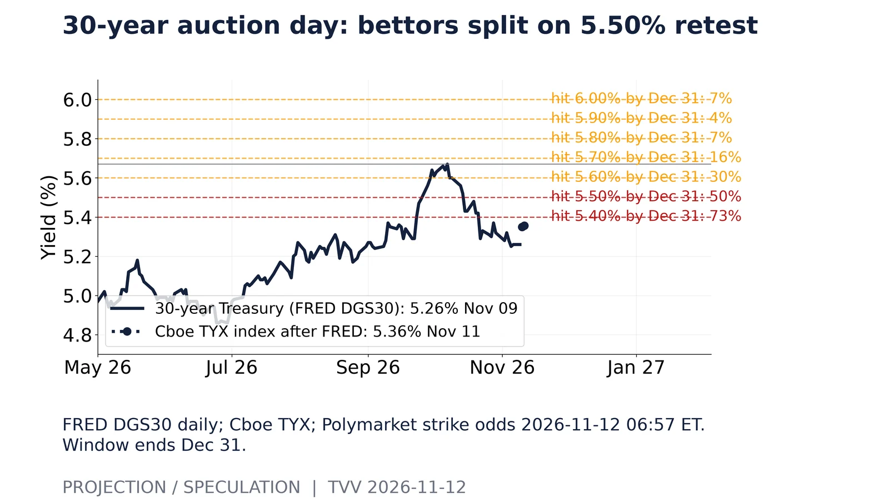
30-year auction day: bettors split on 5.50% retest. FRED DGS30 daily; Cboe TYX; Polymarket strike odds 2026-11-12 06:57 ET. Window ends Dec 31.Source: https://polymarket.com/event/how-high-will-30-year-treasury-yield-go-before-2027 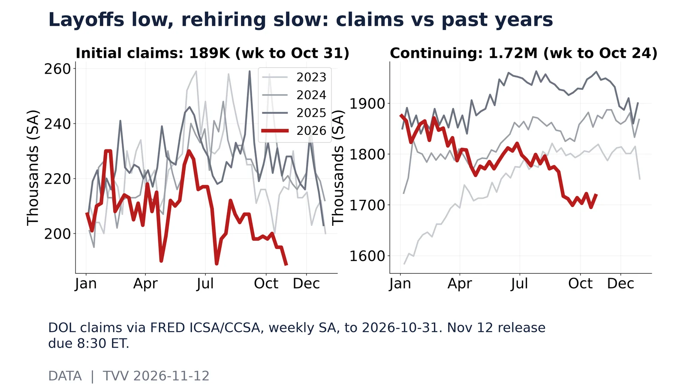
Layoffs low, rehiring slow: claims vs past years. DOL claims via FRED ICSA/CCSA, weekly SA, to 2026-10-31. Nov 12 release due 8:30 ET.Source: https://fred.stlouisfed.org/graph/fredgraph.csv?id=ICSA 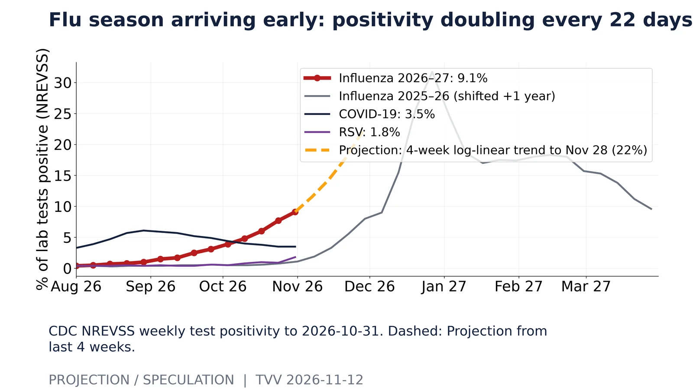
Flu season arriving early: positivity doubling every 22 days. CDC NREVSS weekly test positivity to 2026-10-31. Dashed: Projection from last 4 weeks.Source: https://data.cdc.gov/Laboratory-Surveillance/Percent-of-Tests-Positive-for-Viral-Respiratory-Pa/seuz-s2cv 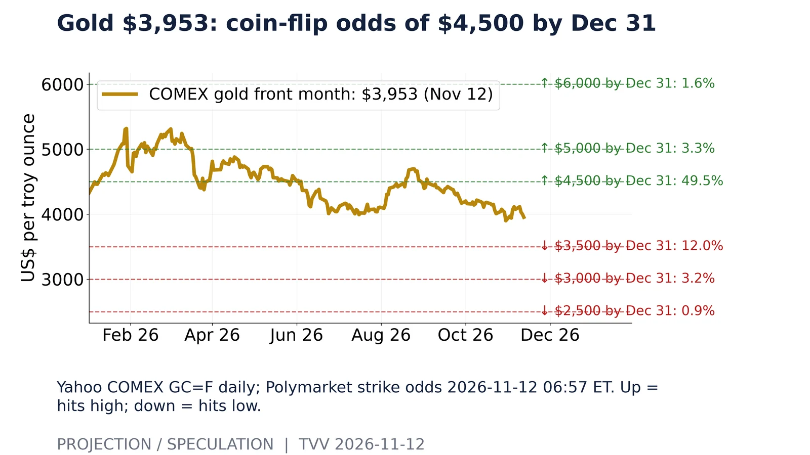
Gold $3,953: coin-flip odds of $4,500 by Dec 31. Yahoo COMEX GC=F daily; Polymarket strike odds 2026-11-12 06:57 ET. Up = hits high; down = hits low.Source: https://polymarket.com/event/what-will-gold-gc-hit-by-end-of-december 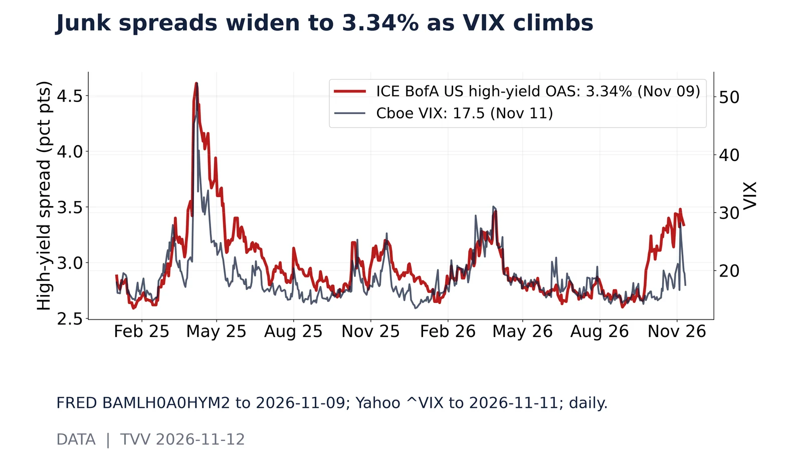
Junk spreads widen to 3.34% as VIX climbs. FRED BAMLH0A0HYM2 to 2026-11-09; Yahoo ^VIX to 2026-11-11; daily.Source: https://fred.stlouisfed.org/graph/fredgraph.csv?id=BAMLH0A0HYM2 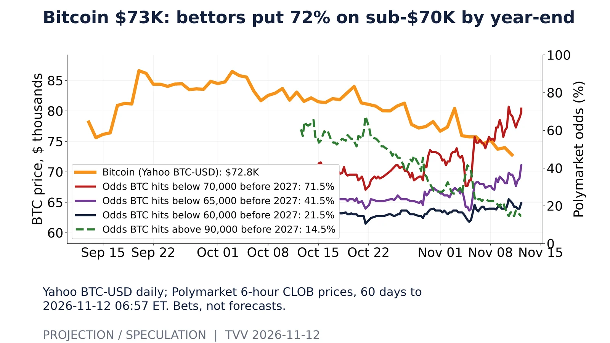
Bitcoin $73K: bettors put 72% on sub-$70K by year-end. Yahoo BTC-USD daily; Polymarket 6-hour CLOB prices, 60 days to 2026-11-12 06:57 ET. Bets, not forecasts.Source: https://polymarket.com/event/what-price-will-bitcoin-hit-before-2027 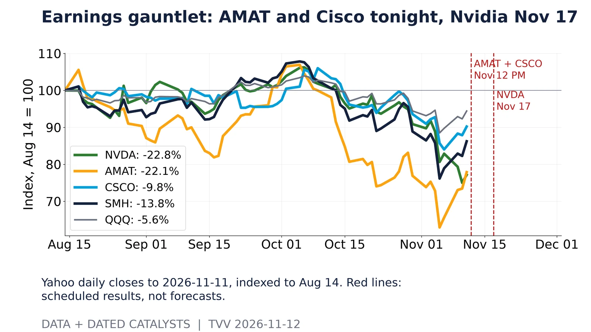
Earnings gauntlet: AMAT and Cisco tonight, Nvidia Nov 17. Yahoo daily closes to 2026-11-11, indexed to Aug 14. Red lines: scheduled results, not forecasts.Source: https://query1.finance.yahoo.com/v8/finance/chart/NVDA?range=2y&interval=1d 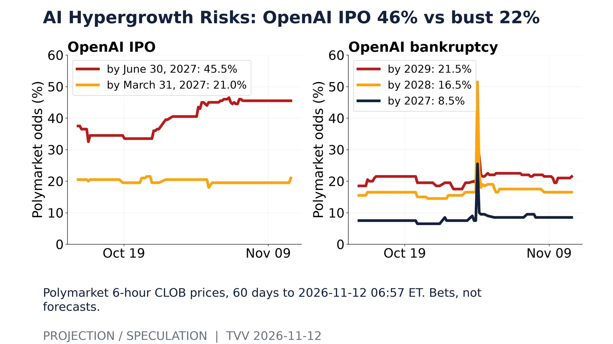
AI Hypergrowth Risks: OpenAI IPO 46% vs bust 22%. Polymarket 6-hour CLOB prices, 60 days to 2026-11-12 06:57 ET. Bets, not forecasts.Source: https://polymarket.com/event/openai-ipo-by